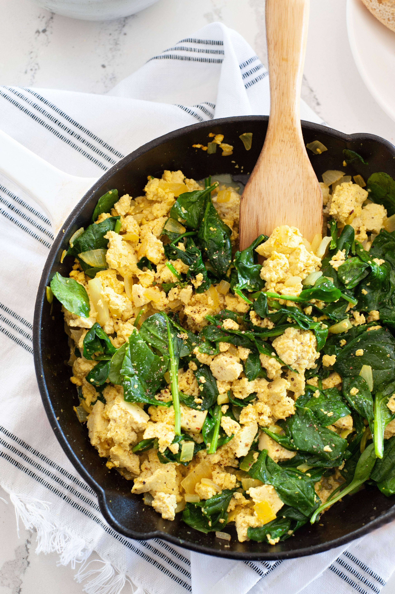

Spinach Tofu Scramble
| Preperation time: |
7 mins |
| Cook time: |
8 mins |
| Total time: |
15 mins |

Ingrediants
- 1 tablespoon extra virgin olive oil
- 1/2 (about 1/2 cup) yellow onion, diced
- 1 pound firm or extra firm tofu packed in water, drained well
- 1 teaspoon nutritional yeast
- 1/2 teaspoon kosher salt, plus more to taste
- 1/4 teaspoon freshly ground black pepper, plus more to taste
- 1/4 teaspoon ground turmeric
- 4 cups loosely packed fresh spinach leaves
- 1/4 teaspoon lemon juice
Method
-
Cook the onion:
Heat a medium skillet over medium-high heat. Add oil; when it ripples, add the onion. Cook, stirring occasionally, until the onion is soft, 3 to 5 minutes.
-
Add the tofu and seasonings:
Use your fingers to crumble the drained tofu into bite-sized pieces. You can do this directly over the skillet.
Add the nutritional yeast, salt, pepper, and turmeric, and stir to combine. Cook, stirring occasionally, until the tofu is hot, about 3 minutes. You’re not aiming to brown the tofu here, but if that happens a little, it’s not an issue.
-
Add the spinach, wilt, and finish with lemon juice:
Add the spinach and cook until wilted, 1 minute. Sprinkle the lemon juice over the scramble. Taste and adjust the seasoning with salt and pepper, if needed. Leftover tofu scramble will keep in a tightly covered container up to four days. I don’t recommend freezing it.